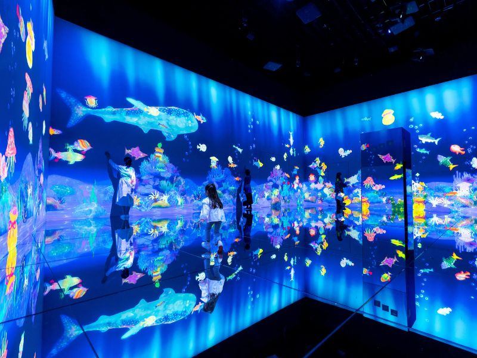
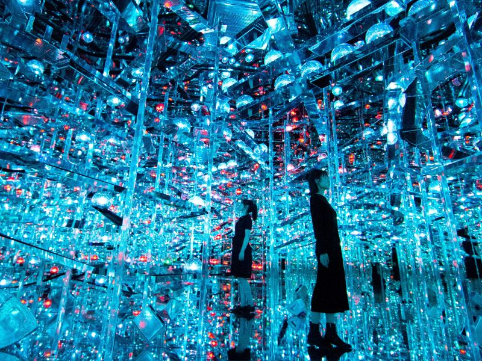
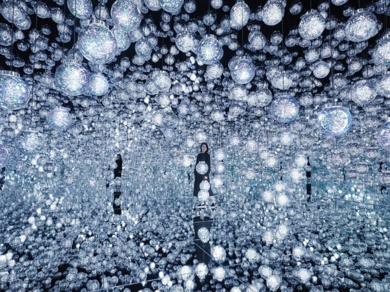

1. Hình ảnh nổi bật



2. Vị trí địa lý
teamLab Borderless tọa lạc tại Tokyo, Nhật Bản – một trong những thành phố hiện đại nhất thế giới. Đây là điểm du lịch nổi bật thu hút hàng triệu lượt khách mỗi năm. Du khách có thể dễ dàng di chuyển bằng tàu điện ngầm hoặc xe buýt công cộng.
Nhờ vị trí thuận lợi, du khách có thể kết hợp tham quan nhiều địa điểm nổi tiếng khác trong cùng một ngày. Điều này giúp chuyến đi trở nên thuận tiện và tiết kiệm thời gian.
3. Hoạt động nổi bật
Điểm đặc biệt của bảo tàng là các tác phẩm nghệ thuật kỹ thuật số có khả năng tương tác với con người. Khi du khách di chuyển, ánh sáng và hình ảnh sẽ thay đổi theo chuyển động đó. Điều này tạo nên trải nghiệm cá nhân hóa và không trùng lặp.
- Khám phá không gian ánh sáng 3D.
- Chụp ảnh nghệ thuật với hiệu ứng độc đáo.
- Trải nghiệm phòng đèn lồng đổi màu.
- Tham gia khu vực tương tác chuyển động.
4. Thời điểm tham quan phù hợp
Bảo tàng mở cửa quanh năm nên du khách có thể ghé thăm vào bất kỳ thời điểm nào. Tuy nhiên, để tránh đông đúc, nên đi vào buổi sáng hoặc các ngày trong tuần.
Mùa xuân và mùa thu tại Tokyo có thời tiết dễ chịu, rất thích hợp để kết hợp tham quan nhiều địa điểm khác.
5. Giá vé và lưu ý khi tham quan
Giá vé có thể thay đổi tùy theo thời điểm và đối tượng tham quan. Du khách nên đặt vé trước qua website chính thức để tránh hết chỗ.
5. Bảng giá vé tham quan
Dưới đây là bảng giá vé tham khảo khi tham quan teamLab Borderless. Giá vé có thể thay đổi theo thời điểm và ngày lễ.
| Loại vé | Đối tượng | Giá vé (Yên Nhật) |
|---|---|---|
| Vé người lớn | Từ 18 tuổi trở lên | 3.800 ¥ |
| Vé học sinh | 13 - 17 tuổi | 3.000 ¥ |
| Vé trẻ em | 4 - 12 tuổi | 1.500 ¥ |
| Trẻ em dưới 4 tuổi | Miễn phí | 0 ¥ |
Lưu ý
- Nên mang giày thoải mái vì phải di chuyển nhiều.
- Không sử dụng đèn flash khi chụp ảnh.
- Giữ trật tự để đảm bảo trải nghiệm cho mọi người.
6. Ý nghĩa nghệ thuật
teamLab Borderless không chỉ là một điểm tham quan mà còn là biểu tượng cho sự kết hợp giữa nghệ thuật và công nghệ hiện đại. Nơi đây thể hiện sự sáng tạo không giới hạn của con người trong thời đại kỹ thuật số.
Mỗi tác phẩm đều mang thông điệp về sự kết nối giữa con người, thiên nhiên và công nghệ. Đây là lý do nơi này được đánh giá cao trên toàn thế giới.